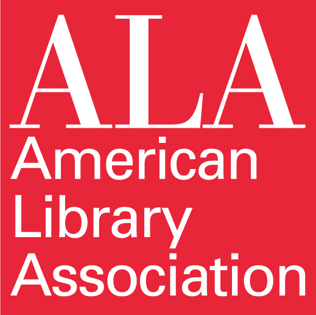

Innovation in Action
The Challenge
Over five months, we attended workshops lead by faculty and industry partners, received feedback at community roundtables, and held weekly team meetings to continually work through product innovation, design, and innovation